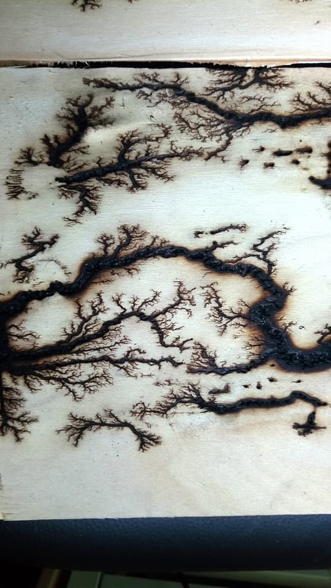
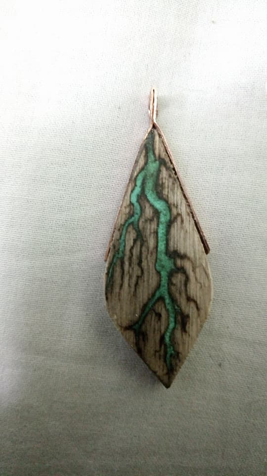
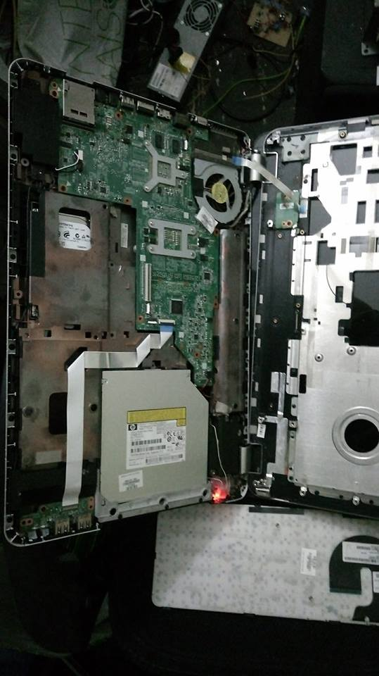

| ◄◄ CLUB PRECEDENT | RETOUR A LA PAGE DE PRESENTATION | CLUB SUIVANT ►► |
| CLUB ROBOTIQUE Le club robotique vous attend, férus d'électronique! Venez bidouiller toutes sortes de matériel informatique et étendre vos connaissances en robotique et en programmation ! Le club met à la disposition de tous ses membres des robots montés, dont un Mindstorm NXT, des platines programmables en language MicroC, d'autres en Ardino, divers composants électroniques... Ce club pourra intéresser aussi bien le néophyte désirant découvrir la robotique, ou seulement la programmation ou l'électronique, que l'expert en la matière qui y trouvera tout le matériel nécessaire pour concrétiser ses porjets, qu'ils osient scolaires ou non. JOUR : Jeudi soirLIEU : Salle de la MDLCONTACT : Emeric HartmannPAGE FACEBOOK : https://www.facebook.com/pg/Club-Robotique-du-Lyc%C3%A9e-Louis-le-Grand-1227304340728544/photos/?ref=page_internal |
|  |  |  |